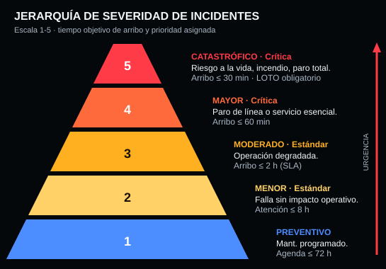

Selecciona una unidad o un reporte para ver su ruta y radio de cobertura.
Reportes de fallas activos
| Folio | Prioridad | Categoría | Ubicación | Sev. | Cuadrilla | ETA | Estatus | Acción |
|---|
Cuadrillas técnicas e ingenieros
| Unidad | Tipo | Supervisor | Certificaciones | Inventario | Turno | Estatus |
|---|
Protocolo de atención de fallas críticas y seguridad industrial
0:00 / 0:30
